5. 探索的データ分析
5.1. データを理解する
5.1.1. 環境構築
配布された Excel ファイルを手元で展開してください。以下のように複数のテーブルが定義された Excel ファイルを開きます。 データには、預金口座開設キャンペーンで営業を行った際の顧客・営業結果のデータが含まれています。「生データ」のテーブルを開き、まずはどのようなカラムが取得されているか確認しましょう。
確認する際のポイント
どのようなカラム（列）があるか
各カラムが数値データか文字列データか
欠損値（空白セル）がないか
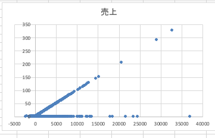
5.2. データの全体像の理解
5.2.1. 代表値の算出
データの概要が理解できました。次に、データから情報を抽出しましょう。データから得られる情報として、平均値・中央値・最頻値があります。このようにデータ全体の特徴を1つの数値で表したものを代表値と呼びます。
代表値の意味
AVERAGE): データの合計値をデータ数で割った値MEDIAN): データを小さい順に並べたときの中央に位置する値MODE): データの中で最も多く出現する値代表値を扱う際に重要なことは、データの特徴を表現する際に1つの代表値だけで判断しないことです。例えば、平均値は極端に大きい（または小さい）値、いわゆる外れ値の影響を受けやすいという性質があります。そのため、平均値だけでなく中央値・最頻値も合わせて確認することで、データの分布をより正確に捉えることができます。実際に確認してみましょう。
まず初めに、データから年齢、銀行残高の各種代表値を算出しましょう。「ワークシート_1_」のシートを開き、各セルに代表値を算出してください。
下記のように値が算出されているか確認しましょう。
例）=AVERAGE(年齢列)
年齢の代表値
平均値 41.92941176中央値 39最頻値 31銀行残高の代表値
平均値 1790.752941中央値 712最頻値 0
銀行残高は平均値（約1,791）と中央値（712）が大きく離れており、最頻値は0です。このように平均値と中央値・最頻値の差が大きい場合、一部の顧客が突出して高い残高を持っている（分布が偏っている）可能性が考えられます。
データから情報を得ることができましたが、これだけではデータの特徴や仮説を立てるのは難しいです。さらに集計や可視化を行い、データから情報を引き出しましょう。
5.2.2. 集計 （単純集計）
データを集計し確認することにより、データの特徴や分布を定量的に確認できます。また、分析や施策を検討するうえでの軸となるデータを発見できます。
例: ある属性を持った顧客データが全体の 9 割を占める場合、残り 1 割のデータに対する施策を検討するより、9割のデータに対する施策を検討・実施する方が効果的と考えます。
データ分析の最初に、分析の成果物や対象物として最も重要度の高いデータから概要を確認します。まずは、成約確度の値を確認してみましょう。今回のデータには成約の確度の数値が含まれています。それぞれの値がどのくらい含まれているのか、頻度の集計を行いましょう。
COUNTIF関数を使用します。COUNTIF(範囲, 検索条件) の様に値を渡します。範囲には集計したい列全体を、検索条件には数えたい値を指定します。
例）=COUNTIF(成約確度の列, 数えたい値)
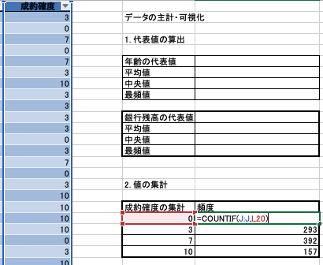
うまく集計ができました。
【実装 1】
上記の例では成約確度のうち1つの値だけを集計しました。同じ手順で、成約確度に含まれる残りの値（0〜10）についても1つずつ集計しましょう。
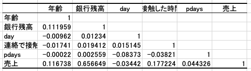
結果を確認すると、成約確度は 3,7 といった値の顧客が多いことがわかりました。
【実装 2】
結婚状況や最終学歴、債務不履行、職業など他の列についても同様に集計を行いましょう。
5.2.3. 可視化：円グラフ
今回のようなデータを扱う際には、どのような値がどのような割合で含まれているかに注目することが多いです。また、データ分析では、結果を直感的に伝える必要があるため、可視化します。
今回は、先ほど集計した成約確度と職業の割合をグラフで可視化します。
【実装手順】
先ほど算出した頻度の部分を選択して、「挿入」 → 「円グラフ」の順に進めます。
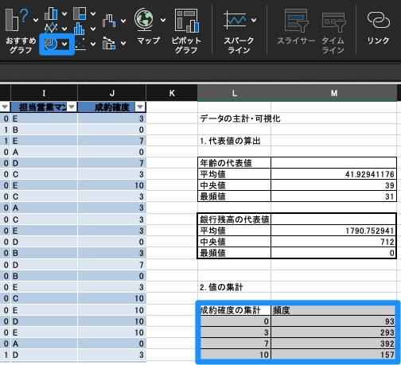
表示されている割合や実数値と、グラフの凡例が正しい事を確認してください。
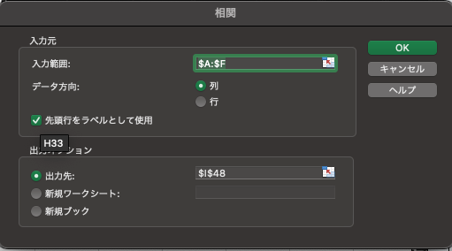
*間違った列が表示される場合は表示されたグラフをダブルクリックし、データのスライスの設定やデータの選択を確認します。
*円グラフはカテゴリの数が少ない（5〜7個程度まで）場合に見やすくなります。職業のようにカテゴリ数が多い項目は、次に紹介する棒グラフの方が比較しやすい場合があります。
5.2.4. 可視化：棒グラフとヒストグラム
円グラフは項目数が多い場合や、それぞれの割合の差が小さい場合には解釈が難しくなります。そのような場合は、棒グラフやヒストグラムを使って分布を確認しましょう。
棒グラフ：職業や成約確度のように、カテゴリ（区分）ごとの個数を比較したいときに使います。
ヒストグラム：年齢や残高のように連続した数値を一定の区間（bin）で区切り、区間ごとの個数やばらつきを確認したいときに使います。
まずは棒グラフから作成してみましょう。
集計結果の値を選択し、「挿入」→「棒グラフ」を選択します。 以下の画像のように選択をしてください。
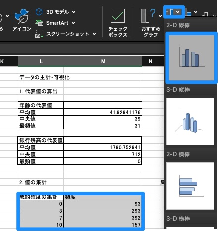
作成したグラフが、以下の画像のように複数の列を参照している場合はグラフをダブルクリックし、データの選択を押してください。
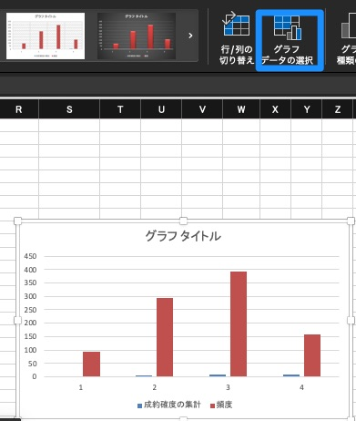
データの範囲選択を行う際に以下のように設定します。
凡例項目：頻度
横（項目）軸ラベル：成約確度の集計列の0~10値の場所を参照
設定後、「OK」ボタンを選択
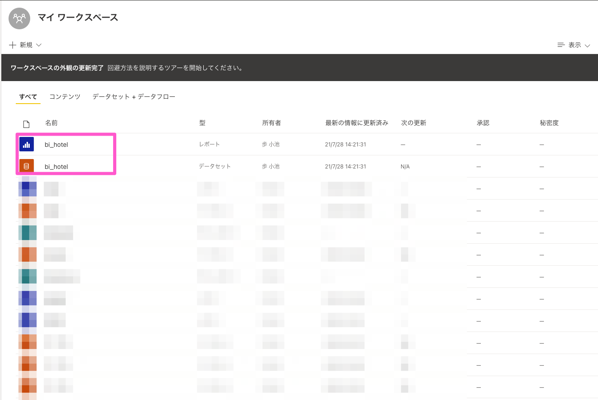
画像のような棒グラフを作成できます。
【実装 3】
他の列の可視化を行い、単一列のデータから気づきを得ましょう。
どの列を可視化しても構いません
ピボットテーブルなどの複数列の比較はNG
実装2,3 から得られる気づきをメモ帳などにまとめてください。
【補足：ヒストグラム】
年齢の列を選択したままで、「挿入」 → 「ヒストグラム」を選択します。
ヒストグラムは、区間でデータを区切ります。身長で言えば、120〜130、140〜150のように区切るイメージです。この区間のことをbinと呼びます。ヒストグラムでは、bin の幅を調整することができます。
ここまでで以下のようなヒストグラムが作成できます。

「年齢の x 軸をダブルクリック」 → 「軸の書式設定」 → 「ビンの幅」を画像のように変更します。
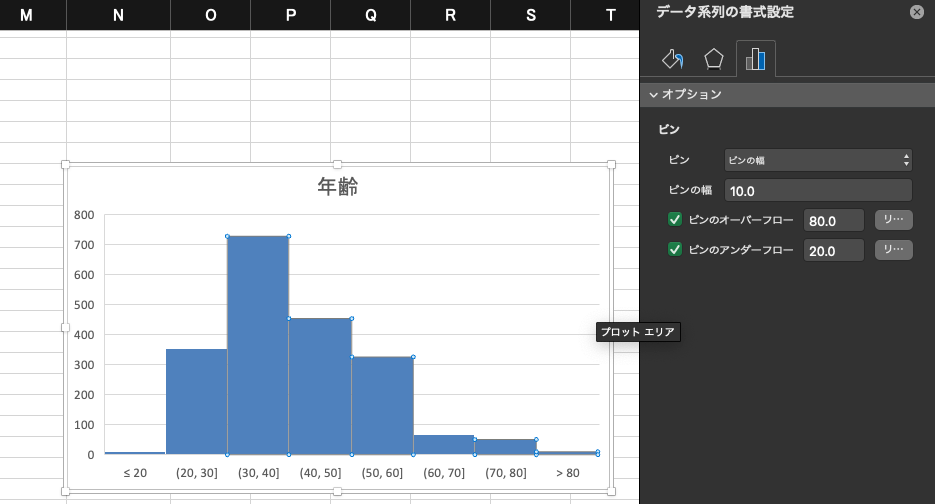
＊実際のグラフと差異がでても無視して頂いて構いません。
画像のように年代ごとに可視化を行うことができました。データを見てみると、30代の顧客のデータが多いことがわかりました。
このようにデータを可視化し、理解を深めることで、分析の指針を決定することも可能です。フレームワークの都合上、先に仮説の設定を紹介しましたが、この段階でデータから仮説を考えることもできます。
5.2.5. まとめ
ここまで、データの代表値を確認し、可視化を行ってデータの概要を確認しました。ここまでの結果からわかることをまとめてみましょう。
例）データから分かること
データ数は〇〇サンプル
リストの平均年齢は約42歳
リストの平均残高は約1,791（中央値は712、最頻値は0）
ローンのない顧客が大半を占める
問）他に可視化の結果からどのようなことがわかるか書き出してみよう。
5.3. 複数の変数による探索的データ分析
それぞれのデータを確認し、データの大枠の理解が進みました。次に、複数のデータをまとめたり、分解したりして、さらに理解を深めます。
さまざまな視点でデータを確認することで、新しい発見の可能性が高まります。集計・可視化をうまく使用すると、2 変数の関連性を理解することが可能です。
5.3.1. データの種類
2 変数の関連性を正しく理解するには、データの種類と尺度について理解している必要があります。ここまで何気なくデータを扱ってきましたが、データにはその種類に明確な区分が存在します。まずは全体像から確認しましょう。データは以下のように大きく、質的データと量的データに区別することができます。
質的データ:数値に直接置き換えることができないデータ。
名義尺度:性別のように順序に意味がない
順位尺度:満足度 (0,1,2) のように順序に意味がある
量的データ:量的データとは年齢や売上などのそのまま数値で取り扱えるデータ
間隔尺度:年齢のように、数値の間隔に意味がある
比例尺度:売上のように比率に意味があり、単純に「〇〇倍」のように表現できるもの
分類 |
尺度 |
例 |
特徴 |
|---|---|---|---|
質的データ |
名義尺度 |
性別、職業 |
分類のためだけの数値・ラベルで、順序に意味がない |
質的データ |
順位尺度 |
満足度 (不満足/普通/満足) |
順序には意味があるが、差の大きさには意味がない |
量的データ |
間隔尺度 |
年齢、気温 |
数値の間隔（差）に意味があるが、比率には意味がない |
量的データ |
比例尺度 |
売上、残高 |
差にも比率にも意味があり、「〇〇倍」と表現できる |
これらは見分けるのが難しいですが、コツとして数値に仮に置き換えて考えてみると良いです。例えば、性別において男性を 1、女性を 0 と置き換えて考えます。数値として扱うとこの 2 つには差が存在しますが、その差に厳密な意味はありません（男性から女性を引いても意味のある量にはなりません）。
それに対して、満足度を不満足：0、普通：1、満足：2 と置き換えた場合、0〜2 の数値には「不満足 < 普通 < 満足」という順序の意味が存在します。ただし、満足(2)と普通(1)の差、普通(1)と不満足(0)の差が同じ大きさとは限らない点が、次に説明する間隔尺度・比例尺度との違いです。データの種類の組み合わせによって、関連性の把握方法が異なります。
では、実際に今回のデータに対して、クロス集計を用いて関係性の把握を行いましょう。
5.3.2. 成約の確度と他の列の関係性を確認する
それでは、クロス集計を使用して、職業と成約確度の関係を見てみましょう。クロス集計とは、2つの項目を掛け合わせて集計し、それぞれの組み合わせがいくつあるかを確認する方法です。例えば「職業」と「成約確度」を掛け合わせることで、職業ごとに成約確度の分布がどう違うのかを確認できます。
Excel ではクロス集計を関数を使用して実装することも可能ですが、今回はピボットテーブルを使用します。
挿入タブからピボットテーブルを選択します。
データの範囲を選択します。テーブル全体を選択しましょう。「挿入」→「ピボットテーブル」を選択しピボットテーブルを作成します。ピボットテーブルの出力先はどちらでも構いません。
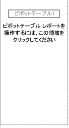
作成ができると上記画像のようにピボットテーブルが作成されます。
以下の図のように、列に職業、行に成約確度、値に成約確度の個数を選択します ＊値の欄はデフォルトで「合計」が設定されている場合があります。成約確度は数値のため合計が選ばれやすいですが、ここでは件数を数えたいので、画像のように「個数」に変更してください
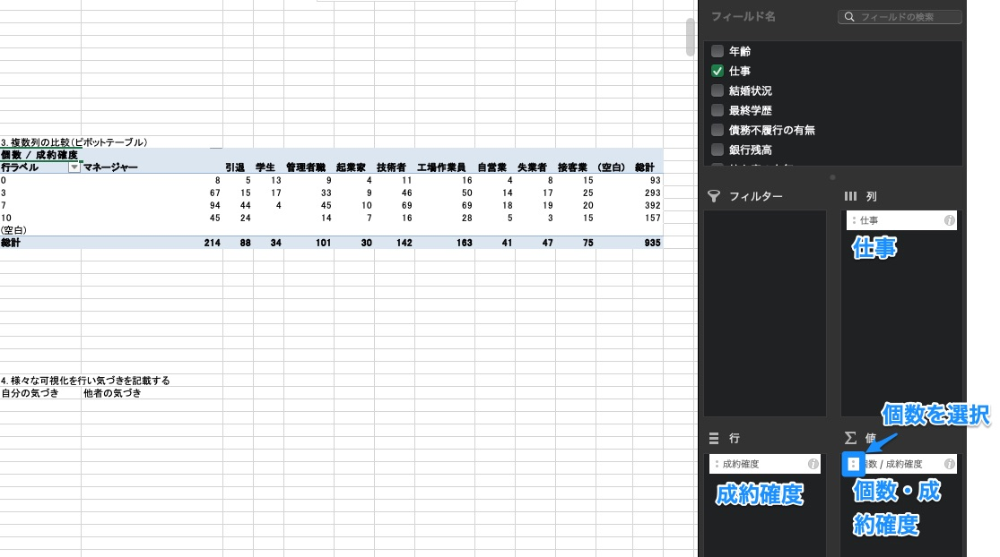
クロス集計を行ったピボットテーブルの作成ができました。結果を確認してみましょう。
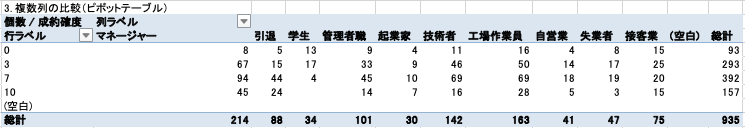
画像のようなピボットテーブルが作成できました。
【補足】
ピボットテーブルを可視化する場合には、棒グラフにすると関連性が分かりやすくなります。
1. 作成したピボットテーブルを選択した状態で、「挿入」 → 「棒グラフ」を選択します。
ワークシート_1_データの可視化のグラフのように可視化できていれば成功です。非常に簡単に可視化ができました。
5.3.3. 成約確度と他の列の関係性を確認する（実践）
【実装 4】
先ほどと同じ手順（ピボットテーブルの作成 → 棒グラフでの可視化）で、以下の項目についても関連性を確認してみましょう。また、結果から気づいたことをまとめましょう。
成約確度 - 結婚状況
成約確度 - 最終学歴
【（例）気づき】
成約数の最も多いのはマネージャー
データ数に対して引退の成約確度が高そう
ここで得た気づきや仮説を検証するために分析手法や統計検定を用いて統計的な証明を行います。